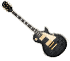
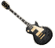

A musical instrument is a device constructed or modified for the purpose of making music. In principle anything that produces sound can serve as a musical instrument.
The expression, however, is reserved generally for items that have a specific musical purpose. The academic study of musical instruments is called organology.

 



A musical instrument is a device constructed or modified for the purpose of making music. In principle anything that produces sound can serve as a musical instrument. The expression, however, is reserved generally for items that have a specific musical purpose. The academic study of musical instruments is called organology.


A musical instrument
is a device constructed or modified for the purpose of making music. In principle anything that produces sound can serve as a musical instrument. The expression, however, is reserved generally for items that have a specific musical purpose. called organology.

A musical instrument
is a device constructed or modified for the purpose of making music. In principle anything that produces sound can serve as a musical instrument. The expression, however, is reserved generally for items that have a specific musical purpose. called organology.